14/12/2022 — Một người đàn ông ở độ tuổi 50 bị đau ngực cấp kèm LVH
Bản dịch tiếng Việt của bài "A man in his 50s with acute chest pain and LVH" – Dr. Smith’s ECG Blog. Giữ nguyên toàn bộ 13 hình ảnh của bản gốc.
Gửi bởi Drew Williams, viết bởi Pendell Meyers
Một người đàn ông ở độ tuổi 50, có tiền sử tăng huyết áp, đang đứng ở trạm xe buýt thì đột ngột đau ngực dữ dội kiểu đè ép, lan lên cổ và cánh tay phải, kèm khó thở, vã mồ hôi và tiền ngất. Đội cấp cứu ngoài viện (EMS) đến và cho dùng aspirin và nitroglycerin. Ông kể đã có vài tuần đau ngực từng cơn giống với cơn đau hiện tại, nặng dần trong 2-3 ngày qua, có cơn kéo dài tới một giờ, nhưng tất cả đều tự hết và có cường độ nhẹ hơn triệu chứng hiện tại.
Có 2 bài rất bổ ích mà chúng tôi dẫn link ở cuối trang. Đừng bỏ lỡ!
Đây là ba điện tâm đồ do EMS ghi:
EMS1 lúc 0735

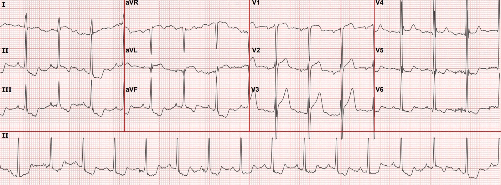
Bản ghi này được gửi cho bác sĩ Smith mà không kèm thông tin nào khác. Ông ấy đã nói gì?
Meyers gửi điện tâm đồ này cho Smith mà không kèm thông tin nào khác và đây là câu trả lời:
Diễn giải của Smith: “Một OMI thành trước rất hiếm gặp kèm điện thế sóng S cao.”
Meyers: “Tôi đã nói rằng tôi sẽ phải coi là OMI cho đến khi chứng minh được điều ngược lại. Nhưng tôi không chắc chắn. Phần thay đổi soi gương ở thành dưới là thứ giúp tôi nhiều nhất. Steve, hãy nói thêm cho tôi biết làm sao anh nhận ra ca này. LVH khiến việc này trở nên khó.”
Smith: “Tôi sẽ không nói là tôi biết chắc. Nhưng tôi rất nghi ngờ vì sóng T tối cấp ở V3, nhưng đặc biệt, như anh nói, là ST chênh xuống soi gương ở thành dưới, cùng với ST chênh lên ở aVL.”
Một điện tâm đồ khác được ghi: EMS2 lúc 0746

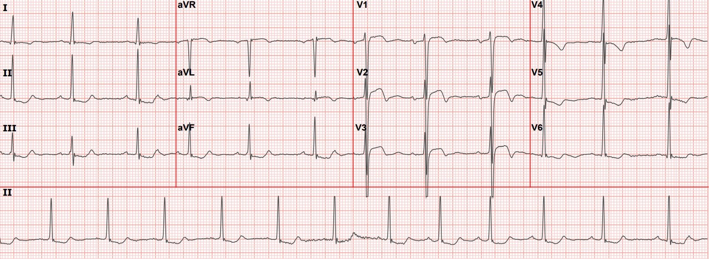
EMS3 lúc 0755

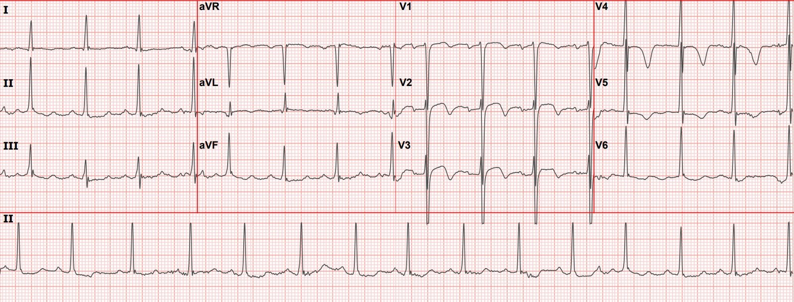
Điện tâm đồ nền (4 tháng trước) (EMS không có được vào thời điểm đó)

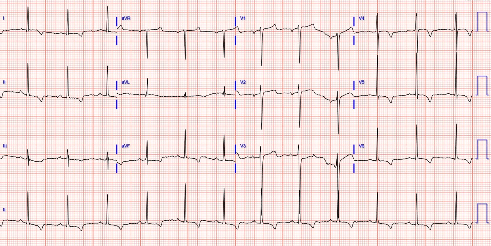
Ba điện tâm đồ của EMS ở trên ban đầu cho thấy các dấu hiệu đáng lo ngại về OMI thành trước và bên cao trong bối cảnh LVH, tiếp theo nhanh chóng là sự xẹp xuống (deflation) và phần cuối sóng T đảo ngược, tất cả cùng gợi ý OMI do LAD thoáng qua kèm tái tưới máu.
Theo ghi nhận, các triệu chứng của ông đã hết khi đến khoa cấp cứu (ED).
Các điện tâm đồ tại khoa cấp cứu:
0814

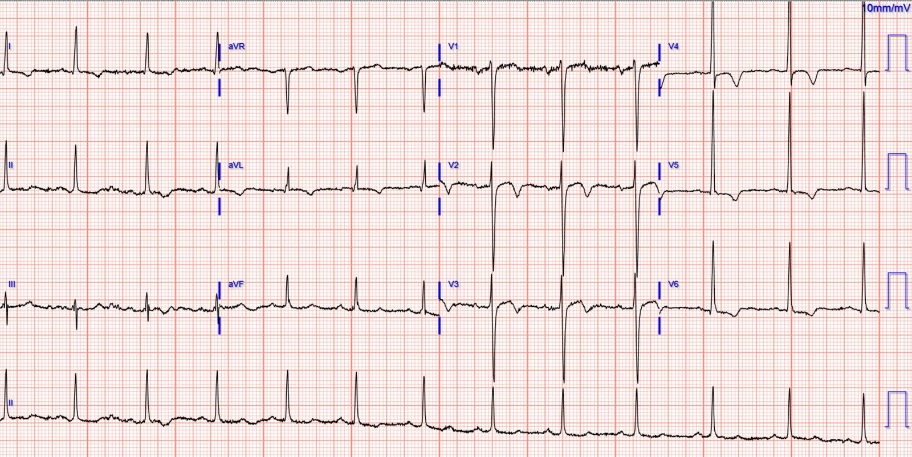
0830

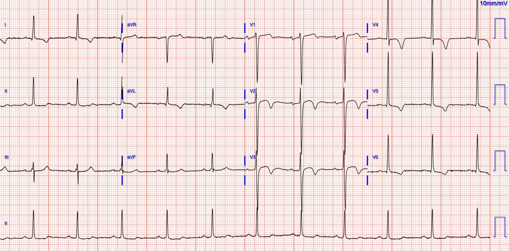
Troponin I độ nhạy cao (hs-troponin) lần đầu trả về 103 ng/L (giới hạn trên tham chiếu (URL) 20 ng/L, và troponin trước đây của bệnh nhân từ 4 tháng trước là 14 ng/L).
Thông tim vào khoảng 0945:
“LAD hẹp 90% đoạn gần với dòng chảy TIMI 3, phù hợp với điện tâm đồ của ông, mặc dù chức năng thất trái vẫn được bảo tồn. Với nitroglycerin, chỗ hẹp 90% có cải thiện nhưng vẫn còn hẹp dai dẳng, phù hợp với bản chất động của bệnh cảnh. Tôi sẽ mã hóa ca này là STEMI cấp vì ông có ST chênh lên thoáng qua, đã bắt đầu tiến triển tại khoa cấp cứu, nhưng tôi nghĩ gọi là STEMI là thích hợp nhất.”
Trước can thiệp:

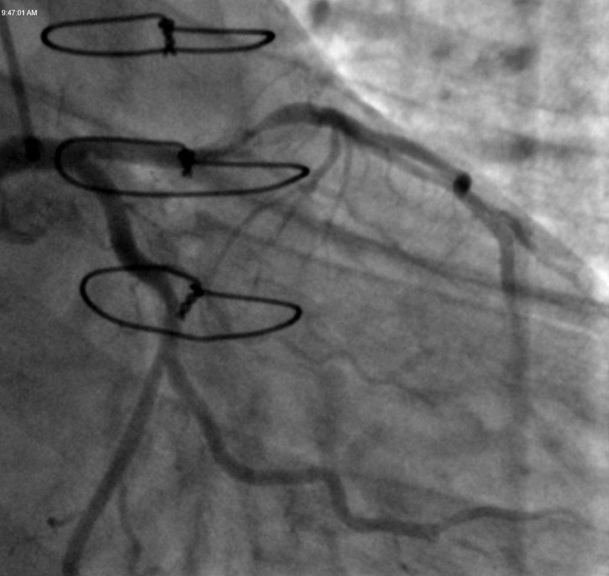

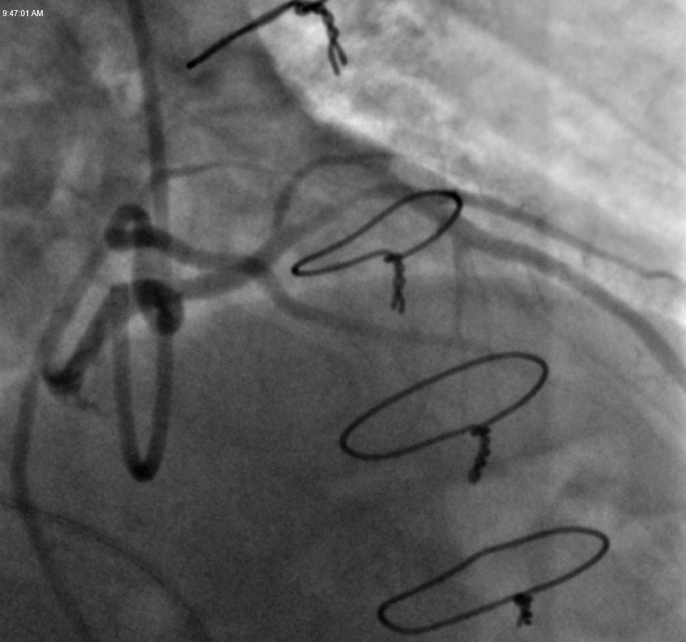
Sau can thiệp:

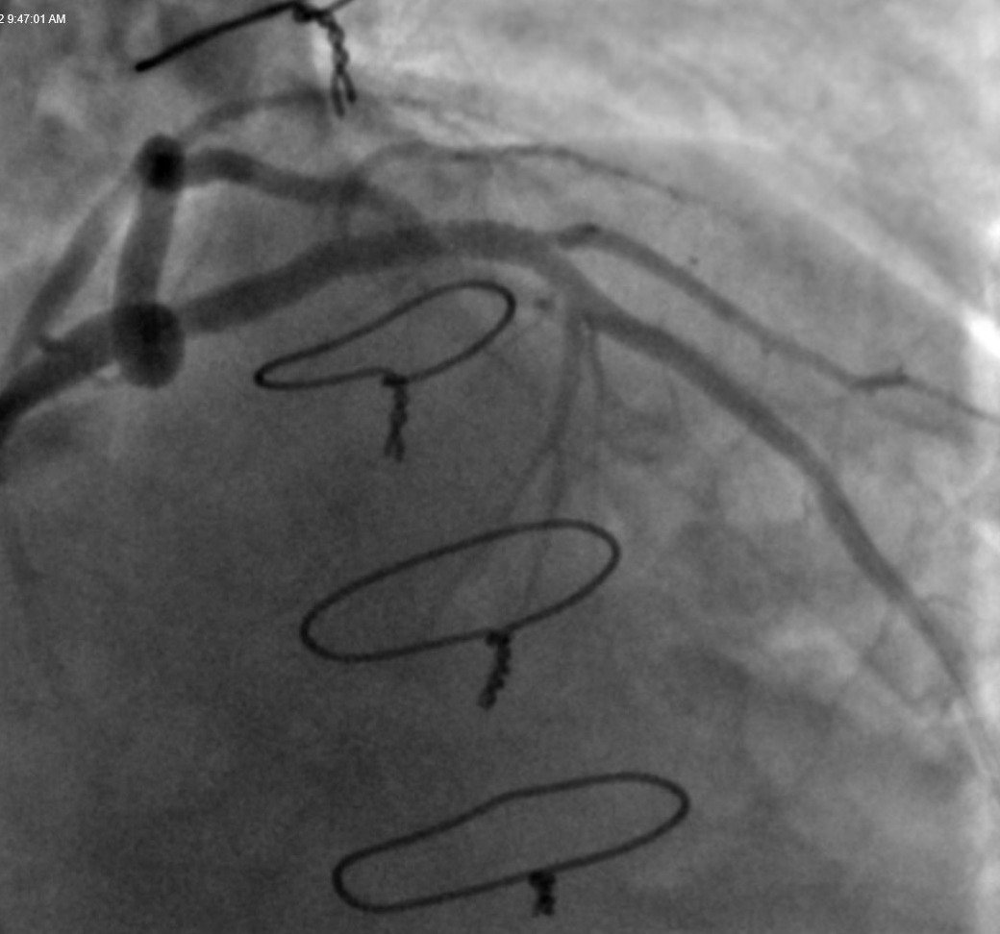
Điện tâm đồ sau thông tim:
1030

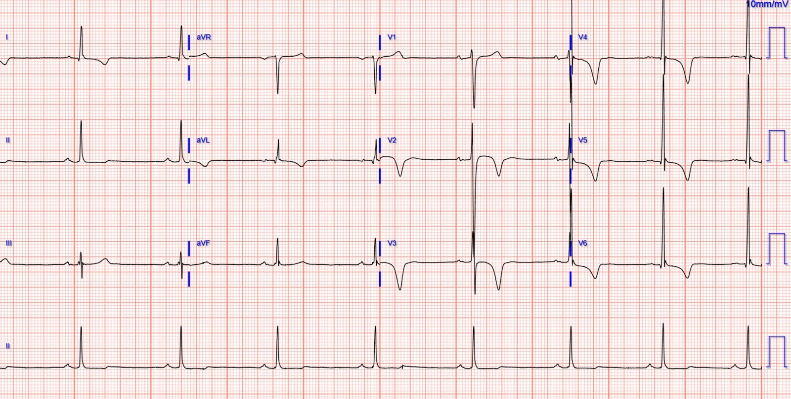
Troponin I độ nhạy cao lần thứ hai trả về 594 ng/L, và không làm thêm xét nghiệm nào nữa.
Không làm siêu âm tim chính thức, và EF bình thường trên chụp buồng thất trong lúc thông tim, không có rối loạn vận động thành rõ ràng.
Điện tâm đồ ngày hôm sau:

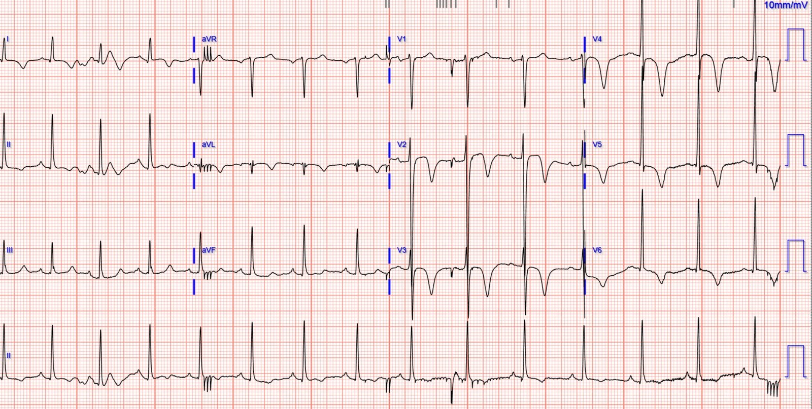
2 bài rất bổ ích về LVH và OMI và giả OMI (Pseudo-OMI)
1. Đây có phải thiếu máu cục bộ cấp không? Thêm về LVH. (Is this Acute Ischemia? More on LVH.)
2. LVH kèm ST chênh lên ở thành trước. Khi nào là STEMI thành trước? (LVH with anterior ST Elevation. When is it anterior STEMI?)
Những điểm cần học:
Hiếm khi thấy điện thế cao của LVH đồng thời với các dấu hiệu OMI ở chính những chuyển đạo có điện thế cao đó. Hiếm đến mức bác sĩ Smith không thể nghiên cứu được vì khó tìm ra những ca như vậy. Chúng tôi cho rằng, trong phần lớn trường hợp, OMI cấp do LAD làm giảm điện thế sóng S ở V1-V3 (ví dụ, chúng tôi đã chứng minh rằng OMI do LAD có điện thế QRS thấp hơn ST chênh lên biến thể bình thường), dẫn đến việc không thể tìm được nhiều ca LVH điện thế cao kèm các dấu hiệu OMI đang diễn ra. Điện tâm đồ EMS đầu tiên của ca này là một ví dụ hiếm gặp về LVH kèm OMI thành trước và bên cao đang diễn ra.
So sánh với điện tâm đồ cũ có thể rất hữu ích.
Tái tưới máu của OMI cho thấy huyết khối gây tắc đã được làm tan ít nhất một phần, nhưng mảng xơ vữa nứt vỡ vẫn còn không ổn định và có thể tắc lại bất cứ lúc nào. Chúng tôi tin rằng cách chăm sóc tốt nhất cho những bệnh nhân như vậy là chụp mạch vành càng sớm càng tốt (tất nhiên trong khi vẫn được điều trị nội khoa tối đa), nhằm xử lý tổn thương không ổn định này và ngăn tắc lại.

==================================
Bình luận của KEN GRAUER, MD (14/12/2022):
==================================
Chúng tôi đã điểm lại rất nhiều ca minh họa cho thách thức trong việc phân biệt giữa LVH rõ rệt — với — LVH + OMI cấp chồng lên. Ca hôm nay cho thấy một khía cạnh khác của chẩn đoán phân biệt đầy thách thức này, cụ thể là nhận ra một OMI cấp thực sự trên nền LVH lâu năm.
- Như các bác sĩ Williams, Smith và Meyers đã nêu — Hiếm khi thấy điện thế cao do LVH cùng lúc với các dấu hiệu điện tâm đồ của OMI cấp.
Hôm nay tôi tập trung Bình luận của tôi vào một số khía cạnh MẤU CHỐT liên quan đến chẩn đoán phân biệt đầy thách thức giữa LVH với LVH + OMI cấp. Để rõ ràng, trong Hình 1 — tôi đã ghép lại và đánh nhãn 2 bản ghi đầu tiên được ghi trong ca hôm nay.
- LƯU Ý: Để làm nền — tôi thêm các link sau tới 4 ca chọn lọc (trong số rất nhiều ca) trên Dr. Smith’s ECG Blog đề cập đến câu hỏi về các thay đổi cấp ở bệnh nhân có LVH rõ ràng. Để xem bàn luận về các ca này — Xin xem Bình luận của tôi ở cuối trang trong bài ngày 20 tháng Sáu năm 2020 — bài ngày 29 tháng Bảy năm 2022 — bài ngày 15 tháng Tám năm 2022 — và bài ngày 30 tháng Chín năm 2022.

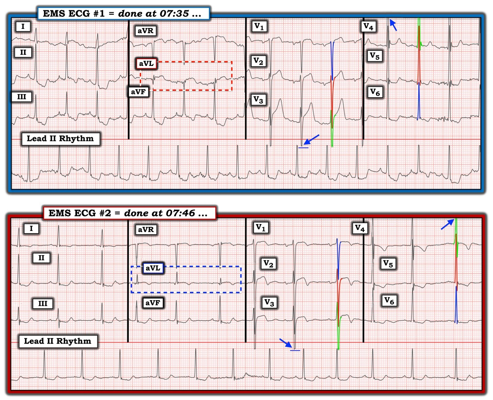
SUY NGHĨ CỦA TÔI về 2 điện tâm đồ EMS ban đầu:
Bệnh nhân trong ca hôm nay là một người đàn ông ở độ tuổi 50 có tiền sử tăng huyết áp lâu năm. LVH rõ rệt là điều hiển nhiên ngay từ bản ghi EMS đầu tiên:
- Tôi đã điểm lại các tiêu chuẩn điện tâm đồ của LVH (bao gồm cả việc đánh giá “tăng gánh” thất trái) nhiều lần (Xin xem Bình luận của tôi trong bài ngày 20 tháng Sáu năm 2020 trên Dr. Smith’s ECG Blog — và Xin LƯU Ý rằng để DỄ tra cứu, tôi đã thêm một LINK tới “Tiêu chuẩn LVH” trong Menu ở ĐẦU mỗi trang của Dr. Smith’s ECG Blog).
- Trong điện tâm đồ EMS #1 — Các đường màu làm rõ biên độ sóng R và sóng S chồng lên nhau ở mỗi chuyển đạo trong 6 chuyển đạo ngực. Chúng cho thấy sóng S rất sâu ở các chuyển đạo trước — và — sóng R rất cao ở các chuyển đạo ngực bên vượt dễ dàng tiêu chuẩn điện thế của LVH ở nhiều chuyển đạo.
- ĐIỂM THEN CHỐT (PEARL) #1: Hãy nhớ rằng điện thế QRS thường bị “cắt cụt” trên các bản ghi trước viện (tức là, các mũi tên XANH LAM cho thấy sóng S bị cắt ở chuyển đạo V3 — và sóng R bị cắt ở chuyển đạo V4). Đặc biệt — Chúng ta KHÔNG biết sóng S ở chuyển đạo V3 thực sự sâu đến mức nào. Dù tôi đồng ý rằng mức ST chênh lên tại điểm J và chiều cao đỉnh sóng T ở chuyển đạo V3 trông có vẻ không tương xứng — việc đánh giá này rõ ràng sẽ khó hơn nhiều nếu hóa ra có thêm 20 mm sóng S bị cắt khỏi kích thước thật của sóng S ở chuyển đạo V3.
- ĐIỂM THEN CHỐT (PEARL) #2: Một lần nữa — chuyển đạo aVL trên bản ghi hôm nay nổi lên là chuyển đạo MẤU CHỐT thuyết phục tôi về khả năng OMI cấp. Nhiễu rõ rệt trong suốt chuyển đạo aVL ở điện tâm đồ EMS #1 làm phức tạp việc đánh giá thay đổi ST-T ở chuyển đạo này. Dù vậy — mặc dù có trôi đường nền và mỗi phức bộ QRST ở chuyển đạo này có một hình ảnh khác nhau — mỗi phức bộ trong 3 phức bộ ở chuyển đạo aVL đều gợi ý rằng quả thật có ST chênh lên! Điều này không nên xảy ra ở một bệnh nhân LVH rõ rệt, ở người mà các chuyển đạo bên như aVL được dự đoán sẽ cho thấy ST-T chênh xuống do “tăng gánh” thất trái (hoặc ít nhất là không cho thấy ST chênh lên!).
- ĐIỂM THEN CHỐT (PEARL) #3: Câu trả lời dứt khoát có ngay ở điện tâm đồ ghi lại chỉ 9 phút sau đó. Nhiễu ở chuyển đạo chi vốn rất nổi bật trong điện tâm đồ EMS #1 — không còn hiện diện trong điện tâm đồ EMS #2. Giờ đây ta thấy rõ một sóng Q khởi đầu ở chuyển đạo aVL — với đoạn ST dạng vòm cho thấy ST chênh lên đã giảm, nhưng có sóng T đảo ngược mới. Ngay cả khi tính đến thay đổi nhẹ của trục mặt phẳng trán giữa 2 bản ghi EMS đầu tiên này — thay đổi ST-T ở chuyển đạo aVL gợi ý thay đổi động phù hợp với tái tưới máu tự phát.
- Thay đổi ST-T của tái tưới máu tự phát còn rõ hơn ở các chuyển đạo trước tim, vốn cho thấy diễn tiến điển hình ở các chuyển đạo giữa ngực của điện tâm đồ EMS #2 — ở chỗ giờ đây biên độ sóng T giảm cùng với sóng T đảo ngược sâu dần. Các điện tâm đồ liên tiếp (đôi khi ghi lại chỉ sau vài phút) — thường sẽ cho chẩn đoán trong một quá trình đang tiến triển cấp tính! (như trong ca hôm nay khi so sánh điện tâm đồ EMS #1 và #2, ghi cách nhau chỉ 9 phút!).
ĐIỂM THEN CHỐT (PEARL) #4: Một lần nữa — Xem xét cẩn thận Bệnh sử đã tỏ ra là MẤU CHỐT để hiểu các dấu hiệu trên các điện tâm đồ liên tiếp. Lý do bệnh nhân hôm nay gọi EMS — là vì cơn đau ngực dữ dội nhất của ông kéo dài dai dẳng. Nhưng bệnh nhân cũng kể bệnh sử vài tuần đau ngực nặng dần, đôi khi kéo dài tới một giờ — nhưng luôn luôn đau ngực tự hết!
- Bệnh sử có những cơn đau ngực thường xuyên mà luôn tự hết này — là phù hợp với các điện tâm đồ liên tiếp và với bệnh sử của bệnh nhân trong ngày ông gọi EMS. Vì mỗi cơn đau ngực trước đây của ông đều tự hết — điện tâm đồ đầu tiên của ông ( = điện tâm đồ EMS #1) gợi ý ST chênh lên bất thường (ít nhất là ở chuyển đạo aVL, nếu không muốn nói cả ở chuyển đạo V3) — nhưng không có dấu hiệu nhồi máu đã hoàn tất.
- Phù hợp với bệnh sử từ những cơn trước — ST chênh lên thấy ở điện tâm đồ EMS #1 đã hết, và được thay thế bằng các sóng T tái tưới máu đã mô tả ở trên trong điện tâm đồ EMS #2 và #3 — tất cả đều xảy ra khi cơn đau ngực dữ dội thuyên giảm! (tức là, Đau ngực dữ dội hiện diện lúc ghi điện tâm đồ EMS #1 — nhưng về cơ bản đã hết cùng với sự xuất hiện của sóng T tái tưới máu vào lúc bệnh nhân đến khoa cấp cứu).
ĐIỂM THEN CHỐT (PEARL) #5: Như chúng tôi đã cho thấy trong nhiều bài ECG Blog trước đây — đối chiếu bệnh sử trong ca hôm nay cùng với các điện tâm đồ liên tiếp — có thể cho chúng ta biết một cách hiệu quả LIỆU động mạch “thủ phạm” đang mở hay đóng. Độ chính xác của sự đối chiếu lâm sàng này đặc biệt đáng chú ý trong ca hôm nay khi xét đến nền LVH rõ rệt như vậy!